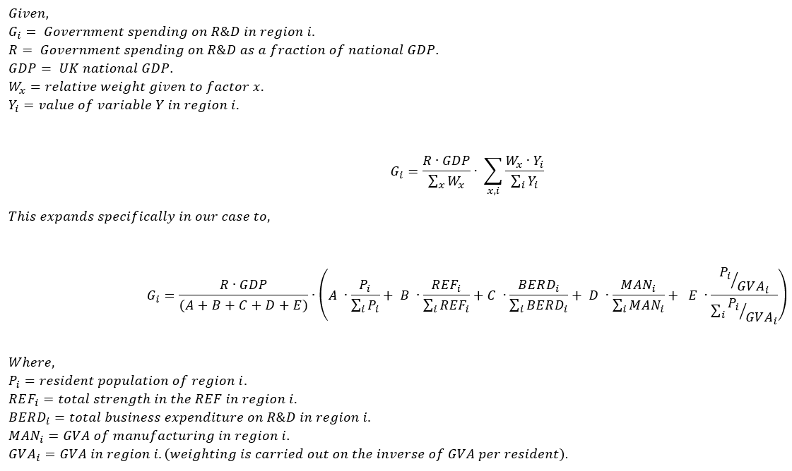

Design the future
(location of UK public R&D investment)
This tool shows where money was spent on research and development (R&D) in the UK in 2016, the most recent year for which we have complete information from Eurostat. Spending is split into public sector (which includes spending by government, higher education, and charities) and private sector (spending by businesses).
We do not know what priorities were used to assign public sector R&D spending in 2016. When you click on the design the future button below you can set the priorities that you think should be used to assign R&D spending in the UK and see how this changes the level of spending by UK nation and region.
Priorities
Set your priorities for assigning R&D spending in the UK here and see how it impacts on where money is spent on R&D by the government in the graphs and maps below.
Spending by region
The UK public sector spent % of GDP (£) on R&D in 2016. In this imagined future it spends % of GDP (£) per year on R&D, per year, consistent with UK R&D spending % of GDP on R&D, assuming business continues to spend twice as much as the public sector.
The UK private sector spent % of GDP (£) on R&D in 2016.
Business spend vs. public sector spend
How this tool works and FAQs.
Spend equally everywhere (weighting by population).
This weighting is the simplest. It assigns government support for R&D in proportion to population. If you choose only this weighting then every region of the UK will receive the same spending per capita.
Spend where research is excellent (weighting by research excellence).
This weighting uses scores from the 2014 REF to assign government support for R&D in proportion to research excellence in each region. Full calculations are documented on the Regional Research Scores GitHub repository. They largely match the formula used to assign QR money in the UK, except that only the output score is considered and no London weighting is applied. Removing London weighting as compared to the QR formula makes this a pure excellence measure rather than one with a regional component.
Spend where business spends on R&D (weighting by business spending on R&D).
This weighting uses data on R&D spending by business. It assigns government support for R&D in proportion to business spend on R&D in 2016 taken from Eurostat table rd_e_gerdreg. A conversion rate of £1.00 = €1.22 is used to convert 2016 data from €/head to £/head. In 2016 the GDP of the UK was £1960bn, which is the basis for our calculations.
Weighting by economic factors.
This weighting uses regional GVA data from the ONS. It assigns government support for R&D in inverse proportion to the GVA/capita of the region. If you choose only this weighting then regions with weaker economies will receive more government spending on R&D per capita.
Weighting by strength of manufacturing.
This weighting uses only the manufacturing component of the regional GVA data from the ONS. If you choose only this weighting then regions with more GVA from manufacturing will receive more government spending on R&D per capita.
Increase total government spending on R&D (as a percentage of GDP).
This slider lets you model increases in government spending on R&D. As a rough rule, business spends £2 on R&D for every £1 that government spends on R&D. Following this rule the UK government's stated goal of reaching 2.4% of UK GDP being spent on R&D would require it to raise spending from the current 0.6% to 0.8% of GDP. This tool does not predict how business R&D would change over time in these scenarios.
How the weighting works.
Once you've selected your weights the following formula is used to calculate how much R&D should be spent in each region.
The implementation of that code is in javascript, as part of this project. The raw data (and some columns that pre-calculate some values) is in ToolData.csv available for download now.
Why are you working at such large geographical units?
This tool works at NUTS1 scale (Yorkshire, London, East of England, etc...), but it would work equally well at NUTS2 scale (Greater Manchester, West Yorkshire, East Anglia) except for London which should generally not be split into parts for this kind of analysis. Since our code is open and documented such a tool could be built easily and would add to public discussion once the complexities of this tool were understood.
Why are you including university and charity spend on R&D in your public sector figures?
University spending on R&D is overwhelmingly funded by government and thus included. Charity spending is less clear cut. Our "private vs. public sector" split is probably more accurately described as "market-led vs. non market-led" spending since charities have in common with government that there is less market pressure to assign R&D spending for greatest economic return than exists for business. We created versions of this tool making that distinction but found them to be widely misunderstood and have opted for the more familiar language we use now.
How do you deal with inflation and economic growth?
We don't. All data and calculations are based on UK GDP in 2016 and expressed in constant 2016 £s. As UK GDP continues to grow faster than inflation the necessary corrections will grow. It is safest to consider the tool as modelling how spending would have been different in 2016 if different priorities had been used to assign R&D spending.